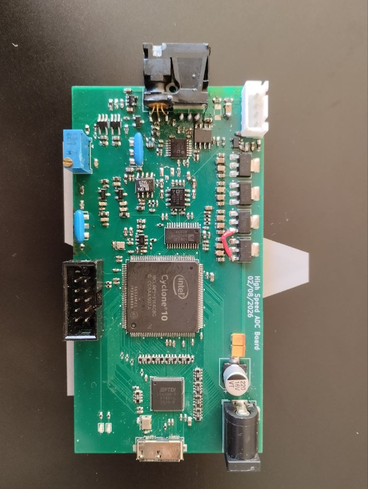
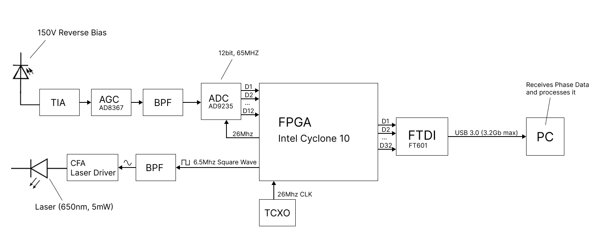
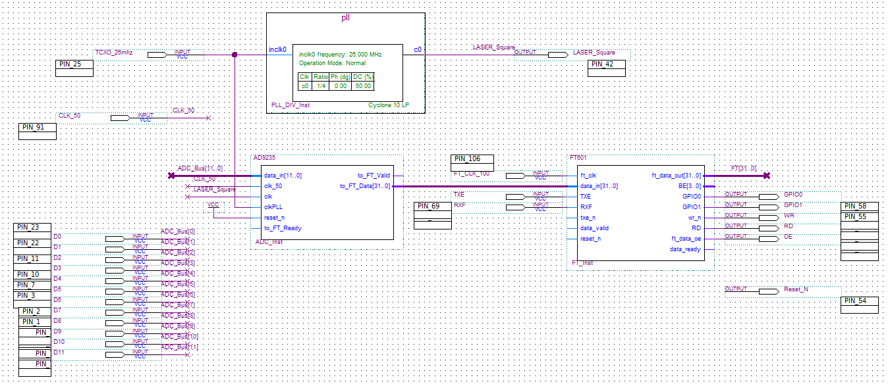
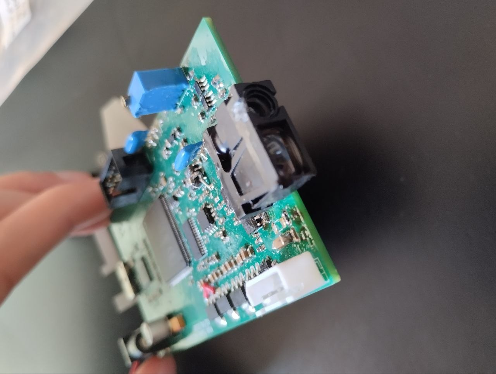
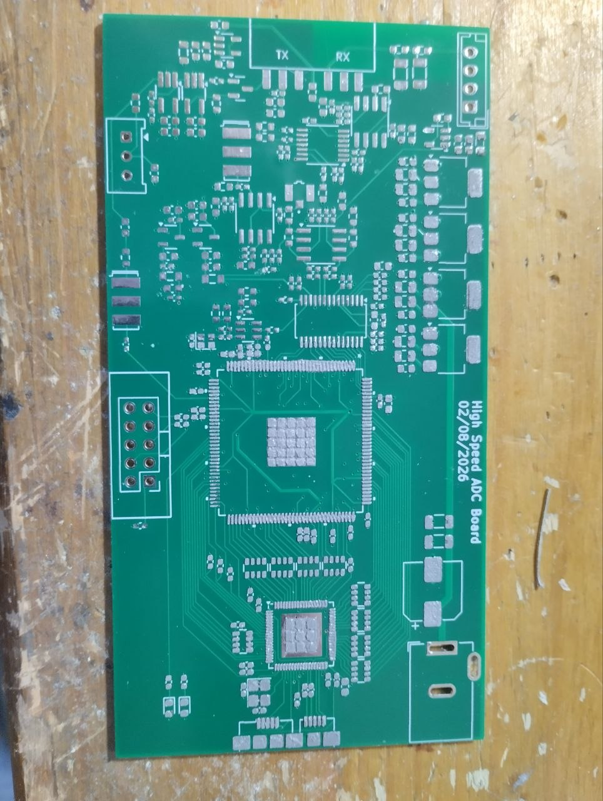

2025 – 2026
Laser Rangefinder

პროექტის მიზანია ლაზერული მანძილმზომის შექმნა - მინიმალური ანალოგური ნაწილების გამოყენებით, ფაზის შედარება ციფრულად.
კომპონენტები High-Speed ADC, FPGA, FT601 გამოყენებულია მხოლოდ ინტერესისთვის და გართობისთვის, კომერციული მიზნებისთვის მსგავს დივაისებს ამზადებენ მხოლოდ იაფი, მარტივი ნაწილებით.
როგორ მუშაობს ფაზური მანძილმზომი
ლაზერის სხივის სიკაშკაშე მოდულირებულია პერიოდული სიგნალით, ამ პროექტში 6.5 MHz სიხშირით. სხივი აირეკლება ობიექტიდან და ბრუნდება ფოტოდიოდამდე. რაც უფრო შორსაა ობიექტი, მით მეტ დროს ანდომებს სინათლე გზას, ამიტომ მიღებული სიგნალი გამოსხივებულს ფაზით ჩამორჩება.
მანძილი გამოითვლება ფაზური სხვაობიდან (Δφ):
d = c · Δφ / (4π · f)
სადაც c სინათლის სიჩქარეა, f კი მოდულაციის სიხშირე. ფორმულაში 4π წერია და არა 2π, რადგან სინათლე ამ მანძილს ორჯერ გადის: იქით და უკან.
ფაზა მეორდება ყოველ 360°-ში, ამიტომ ერთი სიხშირით ცალსახად იზომება მხოლოდ c / (2f) მანძილი. 6.5 MHz-ზე ეს დაახლოებით 23 მეტრია, და ფაზის 1° ცვლილება დაახლოებით 6.4 სმ-ს შეესაბამება. ამიტომ სიზუსტე დამოკიდებულია იმაზე, რამდენად ზუსტად ვზომავთ ფაზას. უფრო დიდი მანძილის გასაზომად რამდენიმე სხვადასხვა მოდულაციის სიხშირეს იყენებენ.
part 1
არეკლილი სიგნალის სისუსტიდად გამომდინარე აუცილებელია მიმღებში შემკრები ლინზის გამოყენება, APD დიოდის. ასევე, გვჭირდება გაძლიერების რამდენიმე საფეხური და ფილტრაცია.
საბოლოოდ მიღებული სიგნალის გაციფრულება ხდება (12 bit რეზოლუცია და 26 MHZ სიხშირით). იმისთის რომ ფაზის შედარება შესაძლებელი იყოს ვაციფრულებ 26 MHZ სიხშირით (6.5 Mhz*4).
FPGA-ის დანიშნულება არის გაციფრულებული მონაცემების მიღება, ფაზის გამოთვლა და შედეგის მაღალი სისწრაფის FTDI ჩიპით გადაცემა კომპიუტერისთვის. შემდეგ საფეხურზე python ის სკრიპტით ხდება მონაცემების მიღება, ვიზუალიზაცია და Low-Pass Filtering მაღალი სიზუსტისთვის.
Block Diagram

ModelSim FPGA Diagram

სხვა დანიშნულება / მომავალი მიზნები
ამ დივაისის გამოყენება შესაძლებელია ნებისმიერი ტიპის სიგნალის გაციფრულებისთვის (max 12 bit, 65 Mhz). პლატაზე ჯდება IPEX ის კონექტორი, რომელშიც ჩვენთვის სასურველ სიგნალ შევუშვებთ.
მაგალითისთვის თუ ავაწყობთ Radio Front-End ს და ჩვენს მოწყობილობას კაბელით დავუკავშირებთ მივიღებთ USB SDR Dongle-ს.
Gallery

.jpg)
